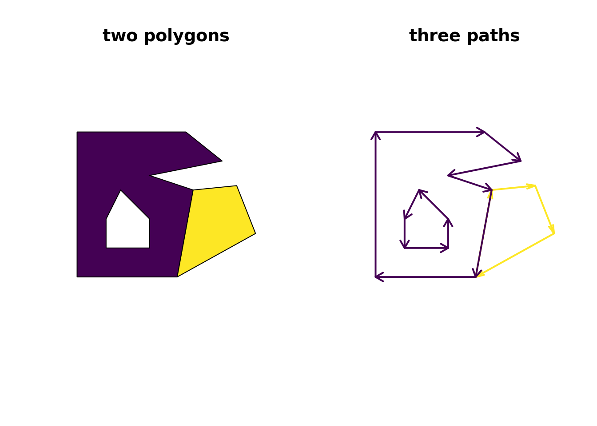
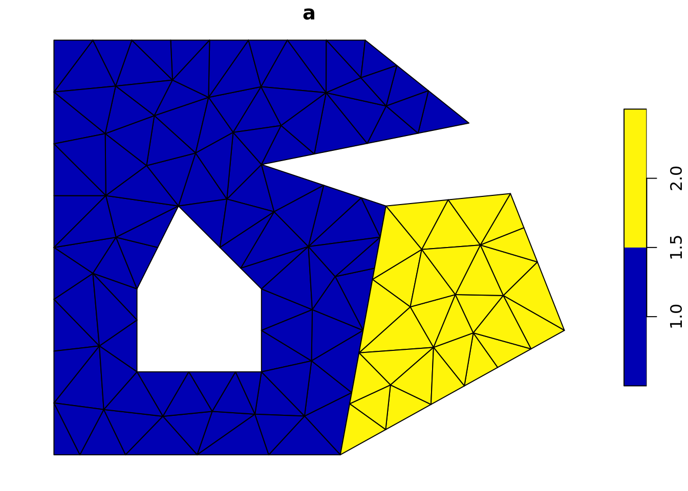
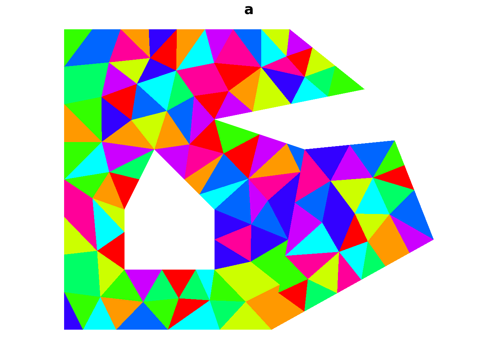
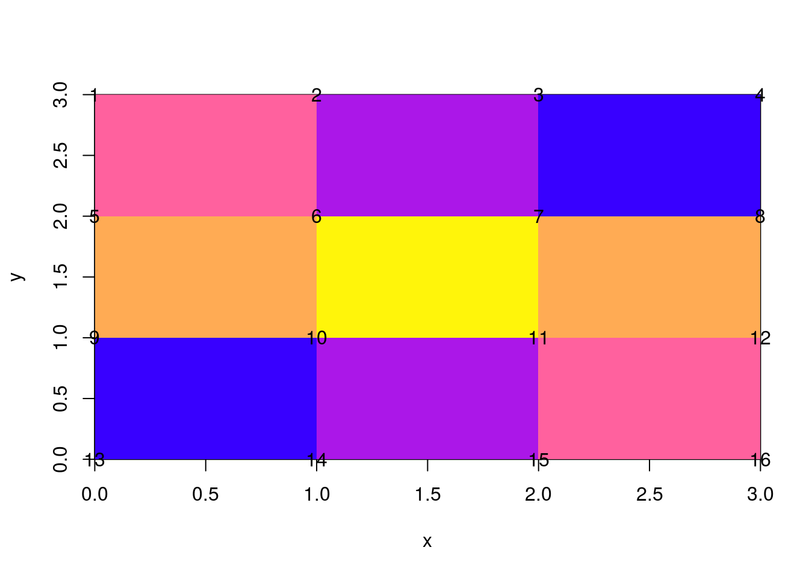

3 3D and mesh forms of spatial data
3.1 Questions
- What are meshes and topology?
- what is the relationship of meshes to geospatial raster/vector data?
3.2 Overview
- Teaching: 20 min
- Exercises: 5 min
3.3 What is a mesh?
Key ideas!
- Topology: the shape of things and their relationships.
- Geometry: the where of things.
- Indexing: the link between topology and geometry.
Traditional spatial data tends to confuse topology and geometry.
These are motiving problems behind my interest in these ideas.
- Lossless reprojection
- Topology fixes
- Tracks and point clouds
- Visualization
Topology vs. geometry
This line has 1-dimensional topology depicted in 3-dimensional geometry.
## x y z
## [1,] 0.0 0.0 0.0
## [2,] 0.5 0.5 0.0
## [3,] 1.0 1.0 0.8## [,1] [,2]
## .v0 1 2
## .v1 2 3lines3d(geometry[t(topology1), ], lwd = 3, col = "firebrick")
material3d(col = "black")
axis3d("x")
axis3d("y")
axis3d("z")
title3d(xlab = "x", ylab = "y", zlab = "z")
quads3d(cbind(c(0, 1, 1, 0), c(0, 0, 1, 1), c(0, 0, 0, 0) - 0.01), col="gray")
rglwidget()This triangle has 2-dimensional topology depicted in 3-dimensional geometry.
## [,1] [,2] [,3]
## .v0 1 2 1
## .v1 2 3 1triangles3d(geometry[t(topology2), ], col = "firebrick")
material3d(col = "black")
axis3d("x")
axis3d("y")
axis3d("z")
title3d(xlab = "x", ylab = "y", zlab = "z")
quads3d(cbind(c(0, 1, 1, 0), c(0, 0, 1, 1), c(0, 0, 0, 0)), col="gray")
rglwidget()3.4 Geospatial data
- raster
- vector
These are traditionally kept separate, but in computer graphics the distinction starts to disappear.
What is a raster?
A layer of neighbouring rectangles?

Or a continuous fields between points?
(Lots of ways to infer the field, including this very poor one).

What is a polygon?
A series of grouped paths?

What’s in the middle?
## Warning in st_centroid.sf(tri): st_centroid assumes attributes are constant
## over geometries of x
The fill we see in traditional 2D graphics is a trick!!.
Search:
it’s not what you draw it’s what you not draw ~Paul Murrell
Technically the trick comes in two types, either the even-odd or winding rule, and this trick is not part of this workshop. The graphics engine uses this rule to draw a pixel if it has been encircled an even or odd number of times, or using a rule about in which direction it was encircled. It happens deep in the graphics.
Where it does matter is for the concept of orientation, and 3D graphics do care about the direction that triangles are wound (consider that reversing the direction is like flipping the triangle in place in terms of how some algorithms behave …).
What’s the fill?
In 3D, and to fill our polygons properly as data - we need primitives.
3.5 Primitives
Terminology alert! (This is a working definition of primitive, not everyone agrees.)
- Point - a single coordinate is a 0-dimensional primitive (vertex, coordinate)
- Line - a line segment between two coordinates is a 1-dimensional primitive (edge, segment)
- Triangle - a triangle joining three coordinates is 2-dimensional primitive
Topology ain’t geometry
(This is topological dimension. Every one of these types of shape can be depicted within a geometric space that is equal to or higher than the topological dimension.)
We will have a matrix of vertices and a matrix of primitive indices. Quads and triangles are generally called faces, line segments are alternatively called edges. All are primitives in computer graphics, but we’ll also see the term finite element used.
Topology can be 3D (tetrahedron) - imagine volumetric fill versus planar faces bounding a volume. Geometry can be 4D, X, Y, Z, T - or any dimensionality we need.
To fill our polygon we need triangles.
data("minimal_mesh", package = "silicate")
tri <- sf::st_cast(sfdct::ct_triangulate(minimal_mesh, a = 0.01, D = TRUE))## Warning in st_cast.sf(sfdct::ct_triangulate(minimal_mesh, a = 0.01, D =
## TRUE)): repeating attributes for all sub-geometries for which they may not
## be constant
Note that if we turn off the border, we don’t notice the difference.

No tricky winding or even-odd rule to worry about, but we have lost our boundary around each distinct shape - we could find them by finding edges within a shape that are not shared by two triangles …
## Warning in plot.sf(tri, border = NA, col = rainbow(10)): col is not of
## length 1 or nrow(x): colors will be recycled; use pal to specify a color
## palette
Raster and vector are not a strong distinction when it comes to meshes
A raster is a very simple version of a mesh. When we store a raster we need the equivalent of
- number of columns and rows
- the extent in the coordinate system used (xmin, xmax, ymin, ymax)
- the coordinate system
- the cell values! (ncols * nrows of them)
In in computer graphics we store
- the corner coordinates ((ncols + 1) * (nrows + 1) of them)
- an index, 4 indices for every quad specify the coordinates
- groupings, what quads belong to which objects
- the coordinate system (hopefully)
It’s the same for a triangular mesh.
- the corner coordinates
- an index, 3 indices for every triangle
- groupings, what triangles belong to which objects (features)
- the coordinate system (hopefully)
And lines are
- the end point coordinates of each line segment (or edge)
- an index, 2 indices for every segment
- groupings, what line segments belong to which objects (features)
- the coordinate system (hopefully)
3.6 A raster is a mesh (implicitly)
The simplest kind of mesh is a basic raster. Consider the matrix the matrix (used above).
On its own this matrix has absolutely nothing to do with spatial data, it is literally a collection of 9 numeric values in a given order, and by the magic of programming we’ve nominated a shape of 3x3. We can’t help but think about this shape spatially however, but there’s a problem. Does each element occupy space or should we consider them to be infinitesimal locations?
R provides either interpretation (to simplify this story we nominate locations for the rows and columns explicitly).
When considered as an image, each matrix element occupies a certain space in width and height, but when considered as a point set the numbers simply float at the given locations. Which is correct? (Spoiler: Both are correct, it simply depends what we are doing.)
x <- seq(1, nrow(m)) - 0.5
y <- seq(1, ncol(m)) - 0.5
image(x, y, m, col = colpal())
text(expand.grid(x, y), lab = m[])
The raster package defaults to the image interpretation and helpfully assumes the values are nominally at the centre points as shown above. We have to nominate the extent or we end up in 0,1 range, we also have to invert the order of the values because raster counts from the top of the page and R’s matrix uses column-major order.
## class : RasterLayer
## dimensions : 3, 3, 9 (nrow, ncol, ncell)
## resolution : 1, 1 (x, y)
## extent : 0, 3, 0, 3 (xmin, xmax, ymin, ymax)
## crs : NA
## source : memory
## names : layer
## values : 0, 0.5 (min, max)R’s image and rasters in general are so efficient because they only store this minimal amount of information: the actual data values, and the extent and dimensions of the space they occur in. If we had to store the centre coordinate of every cell, or worse the corner coordinates then the data storage goes up dramatically. Every software that deals well with these kinds of data has to treat these coordinates as implicit. We can easily expand the centre coordinates.
## x y layer
## 1 0.5 2.5 0.250
## 2 1.5 2.5 0.125
## 3 2.5 2.5 0.000
## 4 0.5 1.5 0.375
## 5 1.5 1.5 0.500
## 6 2.5 1.5 0.375## x y layer
## 4 0.5 1.5 0.375
## 5 1.5 1.5 0.500
## 6 2.5 1.5 0.375
## 7 0.5 0.5 0.000
## 8 1.5 0.5 0.125
## 9 2.5 0.5 0.250but to expand the corners we have to jump through some hoops and even then we get every instance of the corners, not only for each cell but to explicitly close the cell as a polygon.
## class : SpatialPointsDataFrame
## features : 45
## extent : 0, 3, 0, 3 (xmin, xmax, ymin, ymax)
## crs : NA
## variables : 4
## names : layer, Lines.NR, Lines.ID, Line.NR
## min values : 0, 1, 1, 1
## max values : 0.5, 9, 9, 1There are only 20 unique coordinates at the corners, which is where quadmesh comes in.
3.7 the rgl mesh3d format
Rgl is the OpenGL package in R.
A classic computer graphics data model called mesh3d, it’s not widely used but is very powerful. You can visualize a mesh3d model with shade3d(), all the aesthetics, material properties, geometry and topology can be attached to the model
itself as data.
It supports two kinds of primitives quads and triangles.
Quads are a funny case, usually carried by two triangles (at least implicitly) but they are an important computer graphics element.
## List of 8
## $ vb : num [1:4, 1:16] 0 3 0.312 1 1 ...
## ..- attr(*, "dimnames")=List of 2
## .. ..$ : chr [1:4] "x" "y" "z" "1"
## .. ..$ : NULL
## $ ib : int [1:4, 1:9] 1 2 6 5 2 3 7 6 3 4 ...
## $ primitivetype : chr "quad"
## $ material : list()
## $ normals : NULL
## $ texcoords : NULL
## $ raster_metadata:List of 7
## ..$ xmn : num 0
## ..$ xmx : num 3
## ..$ ymn : num 0
## ..$ ymx : num 3
## ..$ ncols: int 3
## ..$ nrows: int 3
## ..$ crs : chr NA
## $ crs : chr NA
## - attr(*, "class")= chr [1:3] "quadmesh" "mesh3d" "shape3d"This is a mysterious seeming data structure, it is the mesh3d type of the ‘rgl’ package, rarely seen in the wild.
The structure is vb, the coordinates of the mesh - these are the
actual corner coordinates from the input raster.

Notice how these are unique coordinates, there’s no simple relationship between the cell and its value and its four corners. This is because they are shared between neighbouring cells. The relationship is stored in the ib array, this has four rows one for each corner of each cell. There are 12 cells and each has four coordinates from the shared vertex pool. The cells are defined in the order they occur in raster.
## [,1] [,2] [,3] [,4] [,5] [,6] [,7] [,8] [,9]
## [1,] 1 2 3 5 6 7 9 10 11
## [2,] 2 3 4 6 7 8 10 11 12
## [3,] 6 7 8 10 11 12 14 15 16
## [4,] 5 6 7 9 10 11 13 14 15It works directly with rgl function, and can be used in more raw form.
rgl.clear()
quads3d(t(qm$vb)[qm$ib,], col = c("firebrick", "dodgerblue")[qm$ib %% 2 + 1])
rglwidget()rgl.clear()
quads3d(t(qm$vb)[qm$ib,], col = rep(c("firebrick", "dodgerblue"), each = 4))
rglwidget()The situation for triangles is much the same, but we have it for the triangle index rather than ib for the quad index. In both cases the geometry is in the vb matrix. Models can have both quads and triangles, using the same set of vertices.
Pop out to real example with quadmesh.
3.8 Quadmesh and coordinate systems
- Run this code
- Think about what is wrong with the scene.
- What can we do about the ugly plot?
library(quadmesh)
qm1 <- quadmesh(crop(worldll, etopo))
qm1$vb[3, ] <- raster::extract(etopo, t(qm1$vb[1:2, ]))
library(rgl)
rgl.clear()
shade3d(qm1, col = "white")
## run this only if you are in a web rstudio
rglwidget()- Run this code
- Can you explain why we multiply the Etopo2 terrain elevation by 20?
- What are alternatives we could use?
qm2 <- qm1
qm2$vb[3, ] <- qm2$vb[3, ] * 20
qm2$vb[1:3, ] <- t(llh2xyz(t(qm2$vb[1:3, ])))
rgl.clear()
shade3d(qm2, col = "white", specular = "black")
aspect3d(1, 1, 0.5)
## run this only if you are in a web rstudio
rglwidget()There’s still a problem with what quadmesh can do.
# two ways to think about raster data
library(sf)
p <- spex::polygonize(r)
p$color_ <- colourvalues::colour_values(p$layer, palette = t(col2rgb(palr::bathyDeepPal(10))))
plot(st_geometry(p), col = p$color_)
library(rgl)
library(anglr)
library(silicate)
library(quadmesh)
tri <- copy_down(TRI(spex::polygonize(disaggregate(r, 4))), "layer")
tri$object$color_ <- colourvalues::colour_values(tri$object$layer)
## BUG FIXME
## Error in rgl.material(...) : There must be at least one color
# tmp <- plot3d(tri)
# rgl.pop()
# rgl.clear()
# shade3d(tmp, alpha = 0.5, specular = "black", col = "grey")
# #wire3d(tmp, col = "black", lwd = 2)
# rgl::aspect3d(1, 1, .2)
# bg3d("lightgrey")
# #
# qm <- quadmesh::quadmesh(r)
#
# ## the point of this part is to show the quads don't carry the z information well (it's ok with very fine quads)
# rgl::wire3d(qm, lwd = 8, col = "green")
#
# ptri <- geometry::delaunayn(coordinates(r))
# t3d <- structure(list(vb = t(cbind(coordinates(r), values(r), 1)), it = t(ptri),
# primitivetype = "triangle", material = list()), normals = NULL, texcoords = NULL,
# class = c("mesh3d", "shape3d"))
#
# rgl::wire3d(t3d, lwd = 10, col = "black")
# rgl::rglwidget()The primary means to create this format from a raster is for 3D plotting, but because we have access to the coordinate directly it provides other uses. We can transform the coordinates (i.e. a map projection) or manipulate them and augment the Z value (for example) in flexible ways.
(The usual way of driving rgl grid surfaces is rgl.surface but this is limited to the centre-point interpretation only - more than the x, y, z list interface as image() is, i.e. it can take an individual x,y pair for every cell, but it cannot properly represent the cell-as-area as image can. For this we need to use shade3d, and actual meshd3d types in rgl).
3.9 Summary
- Topology and geometry are independently dimensional
- Meshes include a matrix of vertices and a matrix of indices
- In mesh-terms rasters and polygons aren’t so different
3.10 rgl miscellanea
Most examples around use rgl.surface, but I am less familiar with that. The thing3d are the higher-level functions in rgl, and the rgl.thing functions are lower-level (recommended not to mix them in usage).
rayshader in particular, has extremely compelling outputs, but it uses the lower level rgl.surface and doesn’t maintain the geographic coordinates, so I see it mostly as a texture-generator (but watch its development!).
rgl.surface can take X and Y matrices, so you can trivially reproject these data and wrap them around a sphere - I only learnt this recently.
WATCH OUT
The single most confusing thing I found with mesh3d was homogeneous coordinates. This is a fourth value on each vertex, making it X, Y, Z, H and because it’s stored transpose, the ib and the vb matrices have the same number of rows (4). The H loosely corresponds to “zoom”, for our purposes set H = 1. (If set to 0 no data will be visible, and a package of mine had this bug until last week.)